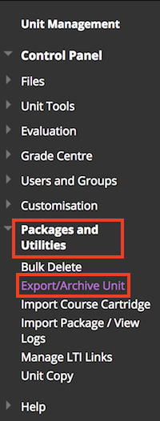

Log into Blackboard and access the unit (Instructor access is needed).
Scroll down to the Unit Management menu, click and expand Packages and Utilities and click on Export/Archive Unit.

Click the Archive button.
Make sure the Include Grade Centre History (increases file size and processing time) option is checked.
IMPORTANT: Make sure the Copy only links to unit defualt directory files (first option, NOT like the screenshot below)
Then click the Submit button.
When the Archive file has processed you will be able to download it on the Export/Archive Unit screen (see step 2). Once the archive file appears on the list, click it to download.
Use this file on the main page to create the rubric reports.